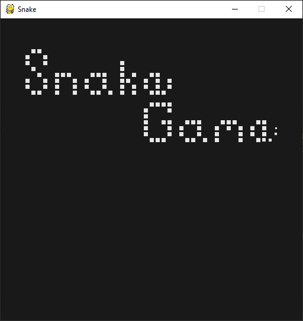
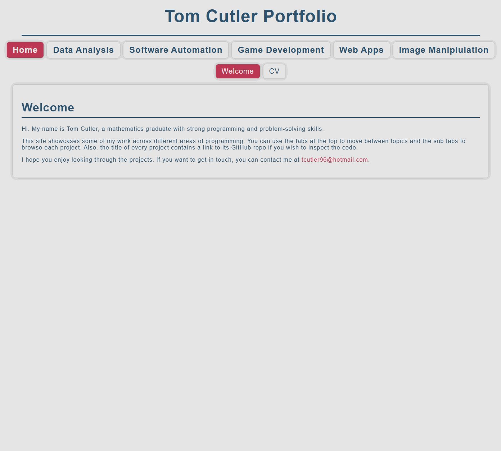

ML Football Analysis
This project builds a computer vision system that analyses football footage using deep learning and machine learning. It detects players, referees, and the ball, tracks movement across frames, measures distance and speed, and provides insights into team performance.
The system combines YOLOv8 object detection, OpenCV tracking, and K-Means colour clustering to identify players, assign them to teams based on shirt colour, and applies optical flow and perspective transformation to convert pixel movement into real-world metrics. Annotated match footage is then saved with all insights overlaid.
Workflow
- Raw footage

- Detect and track players, referees, and the ball using YOLOv8

- Identify team colours and assign players to teams with K-Means clustering

- Detect ball possession for each team frame by frame

- Use perspective transformation to measure player speed and distance in metres (final output)

Covid-19 Time Series
This project looks at how Covid-19 cases changed over time. It pulls data from two main sources. The first is the global confirmed, death, and recovered figures from the JHU CSSE dataset. The second is the UK death records by age and region from the ONS. We clean the data so that the dates, locations and case numbers are consistent, then group them into useful time series. Once the data is in a good state, we produced a set of charts that show how the virus spread, how case numbers changed, and how different areas and age groups were affected.
US Confirmed Daily Cases
By plotting US confirmed daily cases on a semi logarithmic plot, we can see that there was a short period of exponential growth from about 2nd March to 22nd March, which is when stay-at-orders were beginning to be announced in the US. It seems that the lockdown procedures were successful in significantly reducing transmission numbers.

Global Confirmed Daily Cases
By plotting the daily confirmed cases for each country/ province, overlayed on a world map, we get visualisation of how the pandemic spread across the globe. We can see that it starts in Wuhan, China and then isolated hotspots appears throughout the rest of the world which gradually grow.

UK Deaths by Age
By plotting UK deaths over time separated into age groups, we can see a big spike around April, just after lockdown was initiated, that eventually falls off but then begins to rise again from October. Also, the majority of deaths are elderly people, with over 80% of deaths being persons over the age of 70, who most likely had previous underlying health conditions.

UK Deaths by Region
By plotting the map of the UK with colour coded regions, we can see how each region was effected each day. The worst time period was during April with many regions reporting hundreds of deaths each days and the countries capital of London reaching over 300. This rapidly falls off following the lockdown procedures.

Power BI Analysis
This project involved analysing and visualising survey data provided by data professionals, covering aspects such as location, salary, favourite programming language, and overall job satisfaction. The data was cleaned and transformed using Power Query, allowing for the handling of missing values, column formatting, and combining multiple data sources. Relationships and joins were established to connect tables effectively, and DAX formulas were applied to calculate key metrics such as average salary by region, language popularity, and satisfaction trends.
Dashboard
The project features an interactive Power BI dashboard with multiple visualisations, including bar charts, maps, and scatter plots. Drill-downs and grouping enable detailed exploration, while conditional formatting highlights trends and anomalies. Overall, this project demonstrates how structured data modelling, combined with interactive visual analytics, can uncover insights about the data profession and support informed decision-making.

Excel Analysis
This project uses bike sales data to build a clear Excel dashboard. The work began with data cleaning to fix missing values, reshape columns, and keep the file consistent. Pivot tables were then used to explore trends such as sales by region and customer groups, while formulas and lookups helped keep the data accurate and easy to update.
Dashboard
The dashboard includes charts, graphs, and conditional formatting to highlight important values and show patterns at a glance. The aim was to create a simple tool that anyone can use to explore the dataset and understand the main trends with no extra setup.

Tableau Analysis
This project explores an Airbnb dataset using Tableau. The data includes location, number of bedrooms, price, yearly revenue, and other useful details. The work involved cleaning the data, creating calculated fields, and building a set of visuals that make the relationships in the dataset easy to understand. The aim was to produce a clear and interactive way to study how different factors affect listing performance.
Dashboard
The dashboard brings the analysis together with filters, charts, and summary views. You can compare areas, check how price changes with bedrooms, and spot listings with strong yearly revenue. Everything updates as you interact with the controls, making it simple to explore the dataset from different angles.

SQL Analysis
This project cleans and analyses a global company layoffs dataset using SQL. The aim was to fix issues in the raw data so the analysis would be reliable. The cleaning work included removing duplicates, standardising industry names, fixing formatting problems, updating country and date fields, and filling gaps using joins. Once the data was stable, a set of queries was used to explore layoffs from 2020 to 2023 and highlight the main trends.
The analysis looks at how layoffs changed by company, industry, and country over time. It includes ranking companies by total layoffs, checking post IPO trends, and calculating rolling monthly totals. CTEs were used to keep the logic clear and handle multi step queries. The aim was to give a simple view of how global layoffs changed across the period.
Finance Data Automation
Developed a collection of integrated Python scripts to automate personal finance management, covering income, expenses, and invoice processing through automated reporting. The system makes use of file and email automation (IMAP), PDF and CSV parsing, Excel manipulation, and data validation in order to streamline repetitive financial tracking tasks, reducing errors, and improving data transparency.
Scripts
- Process invoices - Connects securely to an Outlook inbox via IMAP, retrieves emails from predefined senders, extracts attached invoices or reports (PDF/CSV), and saves them in structured folders by financial year and date range.
- Process Income - Reads income transaction CSV files from multiple financial year directories, consolidates them into an Excel workbook, updates totals automatically, and prevents duplicate entries.
- Process Expenses - Records and organises expenses within an Excel workbook, automatically sorting them by date and financial year, calculating totals, and maintaining backup copies of previous files.
Step I Must
This game is a Python-based fan recreation of an excellent puzzle game called N Step Steve (found here and here). It was built entirely from scratch in Python for educational and personal use only.
About the Game
Step I Must is a 2D Sokoban-style puzzle game where each move counts.
You control one (or more) slimes who can only take a limited number of steps.
Each level challenges you to plan your moves carefully to reach the goal.

Features
- Animated sprites and fragment shaders
- Custom music and sound effects
- Automatic saving for progress and settings
- Undo/ redo move system to encourage experimentation
Tile-based movement

Object interaction logic

180+ levels

Built in level editor

Built With
- Python 3.13.5
- PyGame (for window, input, and audio control)
- OpenGL (GLSL shaders for rendering effects)
Running the Game
Clone the repository (data folder required) and then:
- Option 1 (recommended): Run 'Step I Must.exe'
- Option 2: Open and run 'main.py'
Maze Generator and Solver
This project explores various techniques to both generate and solve mazes by implementing them in Python. This is all visualised with a full real time display in PyGame. When you start the program with the selected options, a maze is created cell by cell and then the solver takes over and searches for a path through that maze. The maze itself is stored as a grid in memory and displayed using coloured cells, each colour representing a different state.
Maze Generation
The generator builds the maze by walking through the grid one cell at a time until it has filled in the entire grid. It uses a queue to store cells it still needs to visit. Two settings control how this works.
Queue method controls the order news cells are taken from the queue:
- LIFO (last in first out) works like a stack and creates long corridors.
- FIFO (first in first out) works like a normal queue and spreads out more evenly.
Choose method controls how the generator picks the next unvisited neighbour:
- Random picks a neighbour at random, leading to a natural and twisty maze.
- First always picks the first neighbour in the list.
- Last always picks the last neighbour in the list.
Using LIFO with random gives the normal recursive backtracker.
Maze Solving
The solver tries to reach the end cell (bottom right) from the start cell (top left). Every time it tries a new move, it marks the cell as queued. When the solver pops a path from the queue, it marks the cell as searched.
Algorithm controls which path the solver will follow:
- bfs (breadth first search) checks paths in rings spreading out from the start. It always finds the shortest path.
- dfs (depth first search) dives down one path until it cannot continue, then backtracks. It does not guarantee the shortest path.
The solver ends when it reaches the end cell. It then walks back through the path and marks it so you can see the full path through the maze.

Snake
This is a recreation of the classic snake game made with Python and PyGame. The goal is to eat food, grow the snake, and reach a score of 25.
The game features a full menu with a list of options relating to gameplay and visuals. You can change things like the look of the snake and its food, how many times the snake can wrap around the screen, the amount of particle effects, and also audio volume.

Particle Test Chamber
An interactive environment for testing particle behaviour in Python with PyGame. You can place and remove tiles, run simulations, and tweak many settings through a custom options menu.
Features
- Interactive chamber. Click to add or remove tiles which lets you shape the space the particles move through.
- Particle simulation. Particles behaviour is controlled directly by the settings and their movement responds to the layout you build.
- Custom options menu. You can alter almost every part of the simulation, including particle count, gravity strength, and tile colour.
- Real time updates. Changes apply at once so you can experiment and see how each setting effects the simulation.

Portfolio
This is a portfolio site built to show my skills, experience, and the work I've done across different areas of programming. The site includes a full copy of my CV as well as a set of personal projects covering a variety of topics, including data analysis, software automation, game development, web apps, and image manipulation. Each project has its own page with a full description and a link to its GitHub repository where you can view the code source.
Tech Used
- Python for the backend structure
- Flask to build and organise the web app
- HTML, CSS, and JavaScript for the frontend
- Flask Frozen to generate a static version of the site
- GitHub Pages for hosting and deployment

Task Manager
A Flask web app for creating and managing tasks. It lets you add new tasks, rename them, and delete them. All task information is stored in a database, so persists between sessions. This is a basic CRUD app but easy to extend. You could add user accounts, deadlines, or tags if you wanted to expand it.
Tech used
- Python
- Flask
- SQLite
- HTML and CSS

Brush Paintify
This project recreates an image in the style of a brush painting. It achieves this by sampling points from the original image and placing coloured brush strokes on a blank canvas. It has two implementations. Both are in Python and follow the same ideas. One uses the PIL Image library while the other utilizes Numpy arrays.
How It Works
The code samples points across the image at set intervals. A big interval means fewer sample points, so the painting looks rougher and more artistic. A small interval means more sample points, so the result keeps more detail and looks closer to the original image. At each point it reads the colour of the pixel. It then takes a brush stroke image, recolours it to match the pixel it is copying and pastes it on a blank canvas. This is repeated as many times as needed to a build a painted version of the original image.
The PIL version handles strokes with simple image operations like resizing, recolouring, rotating, and pasting. It is easy to follow and good for learning. The Numpy version converts all images to arrays and uses array slicing and custom mixing of colours to blend brush strokes at the pixel level. It is faster and gives more control. Both versions follow the above process and support the same options.
Features
- Two full implementations
- Random sample order
- Random brush rotation
- Optional border
- Image comparison
- Added watermark
- Progress tracking
- Bulk processing
Examples


Seam Carving
This project shows how to shrink an image while keeping important parts intact by implementing a method called seam carving. It works by finding a path of pixels with the lowest visual importance then removing that path. Repeating this many times reduces the width of the image without distorting it or losing important details.
Method
The code uses Sobel filters to detect edges. It converts the image to grey scale then computes the gradient in the x and y directions. The gradient magnitude becomes the energy map. High energy means strong edges and low energy means weak edges. A table of minimum energy is built from bottom to top. For each pixel the code looks at the three pixels below it and chooses the best option. This gives a full map of the cheapest path from any point at the top to the bottom. Once the minimum energy table is built, the code walks from the top row to the bottom row following the lowest cost directions. This seam is then removed from both the image and the energy map, reducing the width by one pixel. This process is repeated as many times as needed.
Minimum Energy Path Visualiser

Example Shrinking

Kernels and Convolutions
This project shows how to process images using kernels and convolutions. In image processing, a kernel or convolution matrix is a small grid of numbers that changes a pixel based on its nearby pixels. The output pixel becomes a simple function of its neighbours. By sliding the kernel over the image, applying convolutions along the way, it is possible to blur, sharpen, detect edges, and more.
The code in this project applies several common kernels and shows how each one changes the image. It includes functions for filtering, edge detection, colour mapping, and full canny edge detection. It also includes helper functions to plot results with Matplotlib. Additionally, these processes are carried out from first principles using only Python and NumPy and does not rely on any image processing libraries so you can see how each step works.
Basic Manipulations

Coloured Edges

Canny Process